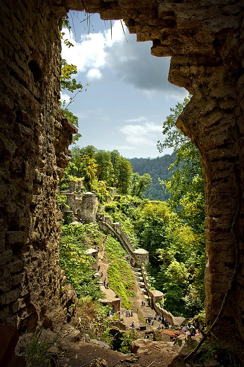

این یک وبسایت جهت آشنایی با آثار تاریخی و باستانی استان گیلان است.
شما فقط با چند دقیقه زمان می توانید تا حدودی با آثار و شخصیت های تاریخی این استان آشنا شوید.
قلعه رودخان فومن
مشخصات قلعه
دژ رودخان یا قلعه حسامی نام قلعهای است متعلق به دوره امپراتوری ساسانی که بر فراز ارتفاعات جنگلی شهرستان فومن در روستای رودخان ساخته شده و ۲٫۶ هکتار مساحت و ۶۵ برج و بارو و دیواری به طول ۱۵۰۰ متر دارد. دژ رودخان در ۳۰ کیلومتری شهر فومن است.مردم روستای قلعه رودخان به زبان تالشی تکلم میکنند .
این قلعه بدون شک یکی از بزرگ ترین و شکست ناپذیر ترین قلعه های ایران باستان بوده است اما متاسفانه فقط ۱۰ درصد بنا مرمت شده و باقی با بیکفایتی مسئولین با توجه به درامد سالانه ۵۰۰ هزار دلاری تجدید بنا نشده است.
ُاین دژ با ارزش تاریخی که دارد بنابر ساختار، معماری و ویژگیهای استراتژیکی و رزمی، ۳۰ مرداد ۱۳۵۴ خورشیدی، به شماره ۳/۱۵۴۹ در فهرست آثار تاریخی و ملی ثبت شد.

تاریخچه
اکثر کارشناسان، ساخت قلعه را در دوران ساسانیان و مقارن با حمله عربها به ایران دانستهاند. در دورهٔ سلجوقیان این قلعه تجدید بنا شده و از پایگاههای مبارزاتی اسماعیلیان الموت بودهاست.
بر روی کتیبه سردر ورودی قلعه که اکنون در موزهٔ گنجینهٔ رشت نگهداری میشود، درج شده که این قلعه در سال ۹۱۸ تا ۹۲۱ هجری قمریبرای سلطان حسامالدین تجدید بنا شدهاست.امیره حسام الدین دباج فومنی (مظفرالسلطان)، فرمانروای بیهپس اولین قدرت منطقه ای بود که از اطاعت از صفویان سرپیچی کرد، و قلعه رود خان را بازسازی کرد تا از آنجا به مقاومت بپردازد او سپاه صفویان را دچار دردسر های بسیاری در قلعه رودخان کرد و شکست سختی به سپاه انگلیسی ها وارد نمود ولی سپس موفقیتی به دست نیاورد و به دربند گریخت و نهایتاً دستگیر و در تبریز اعدام شد.
توصیف قلعه
قلعه رودخان از دو بخش ارگ و قورخانه تشکیل شدهاست. در ارگقسمت غربی این بنا در دو طبقه واقع شده و جنس آن از آجر است. قراولخانهها در قسمت شرقی در دو طبقه با نورگیرها. و روزنههای متعدد بر اطراف مسلط است. چشمهای نیز میان قلعه و گودترین محل آن وجود دارد.
بخش شرقی قلعه شامل دوازده ورودی، زندان، در اضطراری، حمام و آبریزگاه است. بخش غربیدوازده ورودی دارد، چشمه، حوض، آبانبار، سردخانه، حمام، آبریزگاه شاهنشین و چند واحد مسکونی که با برج و بارو محصور شدهاند، دیگر بناهای این بخش را تشکیل میدهند. ۴۰ برج دیدهبانی دور تا دور قلعه را احاطه کرده که اتاقهای هشت ضلعی آن با طاقهای گنبدی پوشانده شدهاست. دور تا دور دیوارها و برجها روزنههایی شیبدار دیده میشود که برای ریختن مواد مذاب و تیراندازی تعبیه شدهاند. لازم است ذکر شود که در طول تاریخ قلعه، هیچگاه دشمنی به آن نفوذ نکرده و نتوانسته آن را فتح کند.
دلیل نام گذاری
زبان مردم محلی از دیرباز تالشی بوده است ؛ و نام قلعه در زبان تالشی قلعه روخون است. نام قلعه رودخان، مترادف فارسی نام تالشی قلعه است. چون این قلعهٔ تاریخی در کنار رودخانه، بنا شدهاست؛ آن را قلعه رودخانهای نامیدهاند. این قلعه در دورههای گوناگون به نامهای قلعهٔ هزار پله، حسامی، سکسار، سگسار و سگسال نیز خوانده شدهاست.
ویژگی زمین شناسی
قلعه رودخان از نظر زمینشناسی در منطقهای بنا شده که در تقسیمبندی زمینشناسی به مجموعه گشت شهرت دارد و طبق بررسیهای اشتوکلین شامل دو فاز دگرگونی است. اولی مربوط به پرکامبرین-پالئوزوئیک با شدت دگرگونی بالا است و دیگری به زمان مزوزوئیک و با شدت دگرگونی پایین مطلق است.
پل خشتی لنگرود
پل خشتی لنگرود به عنوان معروفترین بنای تاریخی و نماد شهر لنگرود شناخته میشود که از آجر و ساروج ساخته شدهاست. این پل تاریخی برروی رودخانه لنگرود که از یکی از آبراهههای سفیدرود سراریز میشود و از مرکز شهر لنگرود عبور میکند ساخته شده و محلههای قدیمی «فشکالی محله» و «راه پشته» را به یکدیگر متصل میکند. در زبان گیلکی لنگرودی به این پل، خَشته پٌل و خَشته پورد نیز میگویند.
تاریخ ساخت
از زمان دقیق ساخت این پل و سازنده آن هیچ سند معتبری در دست نیست ولی حدود ساخت این پل، بنا بر نوشته محمود پاینده لنگرودی (محقق برجسته لنگرودی) و بر اساس استناد به کتاب تاریخ خانیبعد از سال ۹۱۲ هـ. ق و در دوران صفویه است. این پل در چهار دوره مرمت اساسی گردید که اولین مرمت در اواخر دوره قاجاریه، مرمت دوم در زمان پهلوی اول توسط حاج حبیب لِمَنجویی که با ریختن سرب در اطراف پایه اصلی پل استحکام این پل را تقویت نمود، مرمت سوم در زمان پهلوی دومسال ۱۳۳۷ توسط اداره کل حفاظت آثار باستانی و بناهای تاریخی با تعویض اجرهای پودر شده با اجرهای جدید و نهایتاً مرمت چهارم در سال ۱۳۹۷ توسط اداره میراث فرهنگی با تعویض خشتهای خارجی تخریب شده و بند کشی کل خشتها و تعویض فرم لبههای پل به شکل نوک تیز انجام شد.
مشخصات پل
پل از یک سطح میانی و دو بخش جانبی شیب دار تشکیل شده و طول قسمت اول آن ۱۰/۱۵ متر و دو قسمت جانبی ۱۰ الی ۱۱ متر است. عرض پل در قسمت میانی و بین دو جان پناه ۳۴۵ تا ۳۵۰ سانتی متر و عرض قسمت جان پناهها هر یک ۴۵ سانتی متر و ارتفاع آنها ۳۵ سانتی متر است. عرض کلی پل ۴۳۰ سانتی متر است. محل عبور عابر پیادهروی پل را در مرمتهای اخیر با قلوه سنگ مفروش ساختهاند. پل دارای دهانه با طاق جناقی نسبتاً کند است. دو فرو رفتگی در پیشانی پل و در فاصله بین دو قوس قرار دارد. هر یک از قوسها در سمت بیرونی دارای یک نوار آجرکاری به عرض ۱۲ سانتی متر است که حالتی تزیینی و برجسته دارند. علاوه بر آن در کنارهٔ قوسها آجر چینی خاصی نیز انجام شده و حاشیهای به عرض ۶۰ سانتی متر را به وجود آوردهاست. پایه میانی قطور پل ۴ متر عرض دارد و دو موج شکن یا سیل برگردان در دو طرف پل برای کاستن از فشار آب در ایام افزایش سطح آب تعبیه شدهاست. یک دهانه کوچک بین پایه میانی پل و یک طاق نمای جناقی بر بالای آن با عرض ۵۰ سانتی متر وجود دارد. پل خشتی لنگرود به علت قرارگیری در مرکز شهر و همچنین جنس مواد استفاده شده در ساخت آن، همیشه مورد توجه و اهمیت بودهاست و معماری این پل در میان تمام پلهای خشتی منحصر به فرد بوده و نمونه پل خشتی لنگرود با این مشخصات نه تنها در ایران بلکه در هیچ جای جهان وجود ندارد.
موزه چای لاهیجان
آرامگاه محمد میرزا قوانلو ملقب به کاشف السلطنه (موزه تاریخ چای لاهیجان) مربوط به دوره معاصر است و در لاهیجان، خیابان کاشف شرقی نرسیده به سه راه کشاورزی واقع شدهاست. این اثر در تاریخ ۲۶ آبان ۱۳۷۵ با شمارهٔ ثبت۱۷۶۹ بهعنوان یکی از آثار ملی ایران به ثبت رسیدهاست.
موزه لاهیجان یکی از جاذبههای گردشگری شهرستان لاهیجان است که ابتدا به عنوان مقبره کاشف السلطنه مورد بازدید قرار میگرفت، با تکمیل ساختمان نیمه کاره مجاور آرامگاه و از سال۱۳۷۵ به عنوان موزه تاریخ چای ایران مورد بهرهبرداری قرار گرفت.
این موزه از یک سالن اصلی دو طبقه، یک برج و دو فضای اداری شمالی و جنوبی تشکیل شدهاست. طبقه همکف از سالن اصلی بنا، به اسناد و مدارک مرحوم کاشف السلطنه و وسایل مربوط به چای و چاینوشی اختصاص داده شده و طبقه دوم بنا را ویترینها و اقلام مردمشناسی تشکیل میدهند.
غار دربند رشی رودبار
غارهای دربند رشی در جنوب روستای رشی، بخش رحمتآباد و بلوکات، شهرستان رودبار، استان گیلان، و در ارتفاع حدود ۷۵۰متر از سطح دریا واقع شده است. قلهٔ درفک با ارتفاع نزدیک به ۲۷۳۳متر نیز در این منطقه قرار دارد. این مکانهای باستانی شامل غار کویلگر با طول تقریبی ۶۰متر و غار جوکویله با طول تقریبی ۳۰متر است که دهانه هر دو در جهت جنوب قرار دارد.
پیشینه مطالعات
غارهای دربند رشی نخستین بار توسط ولی جهانی (باستانشناس) در سال۱۳۸۴ شناسایی و بررسی شد. در بررسی اولیه، قطعات سفال (هزاره اول پیش از میلاد) و بقایای استخوان جانوران و انسان گردآوری شد. پروندهٔ ثبت غار نیز در مرداد۱۳۸۴ با شماره ۱۳۲۱۹ به ثبت آثار ملی رسید.
در سال۱۳۸۶، پژوهشگران موزه ملی ایران شامل فریدون بیگلری، سونیا شیدرنگ و ولی جهانی بررسیهای تکمیلی انجام دادند. آنها علاوه بر بقایای جانوران، ابزارهای سنگی شامل یک ساطور، تراشه روتوش شده و ضایعات تراش سنگ را یافتند که مربوط به دورهٔ پارینهسنگی قدیم بودند.
اولین فصل گمانهزنی در اردیبهشت۱۳۹۱ با سرپرستی بیگلری و معاونت ولی جهانی و همکاری متخصصان میانرشتهای انجام شد. نتایج این بررسی شامل مجموعهای غنی از بقایای باستانشناختی و دستساختههای سنگی بود که شناخت دورههای پیشاتاریخی ایران را تسهیل کرد.
اهمیت
طبق تاریخگذاری بقایای سنگواره و فناوری دستساختههای سنگی، غار در اواخر دورهٔ پارینهسنگی قدیم ( حدود ۲۰۰ تا ۲۵۰ هزار سال پیش) و در دورهای نسبتاً گرم و مرطوب مورد استفادهٔ فصلی شکارگران عصر سنگ بوده است. ساکنان غار حیواناتی چون گاو وحشی، گون و بزکوهی را شکار میکردند و ابزارهای سنگی خود را از سنگهای آذرین و آتشزنه میساختند. کشف بقایای گونهٔ منقرضشدهٔ خرس غار نشان میدهد که غار در فصول سرد محل زمستانخوابی این گونه بوده است.
با توجه به اهمیت تاریخی و طبیعی مجموعه، پیشنهاد ثبت آن در فهرست میراث جهانی یونسکو مطرح شده است.
وضعیت موجود
این غارها در درهٔ دربند و محدودهٔ جنگلهای هیرکانی واقع شدهاند و دارای چشمانداز بکر و دستنخورده هستند. با وجود جاذبههای طبیعی، بازدید بدون مدیریت باعث انباشت زباله، آسیب به پوشش گیاهی، یادگارنویسی بر دیوارهها و شکستن چکندههای طبیعی شده است. همچنین جمعیت خفاشهای ساکن غار کاهش یافته است. اقدام اداره کل میراث فرهنگی گیلان برای بهرهبرداری از غارها به عنوان رستوران و بازارچه صنایع دستی با انتقاد رسانهها مواجه شد.
شیخ زاهد گیلانی
تاجالدین ابراهیم کردی سنجانی معروف به شیخ زاهد گیلانی (۶۱۵-۱۲۱۸/۷۰۰-۱۳۰۱) از صوفیان بزرگ ایران بود.
زندگی
صفیالدین اردبیلی بنیانگذار دودمان صفوی ۲۵سال نزد زاهد گیلانی گذرانید و دختر او را به همسری گرفت. زاهد، صفیالدین را به جانشینی خود در طریقت برگزید. پس از مرگ زاهد، و به روایتی در همان دوران زندگی وی، صفیالدین به اردبیل بازمیگردد و طریقتی به نام صفویه در آنجا بنیاد میگذارد. زاهد مرید شهاب الدین اهری است.
طریقت
طریقت او به رهبران تصوف مانند ابونجیب سهروردی و حسن بصری میرسد.
شیخ زاهد صوفی نوگرایی بود. وی به تصوف در معنای جدیدی توجه داشت. وی بر این باور بود که تلاشهای روزانه برای تأمین معاش خود و خانواده در حد جهاد در راه خدا باارزش است. شیخ زاهد توجه به خانواده و تشکیل خانواده را بااهمیت بهشمار میآورد.
مدفن
در حال حاضر در جاده لنگرود به لاهیجان در ۳ کیلومتری لاهیجان، در روستایی به نام شیخانبر بقعهای وجود دارد که به عنوان آرامگاه شیخ زاهد گیلانی شناخته میشود.
با این حال پژوهشگران نظرات متفاوتی درخصوص محل دفن شیخ زاهد ارائه دادهاند. احمد موسوی مزار شیخ زاهد را بر اساس نوشتههای صفوةالصفا حوالی روستای سیاهورود در ۱۳کیلومتری فومن میداند و اضافه میکند در آنجا بنای سادهای وجود دارد که به شیخ (پیر) زاهد منسوب است. هرچند به علت ارادت مردم به این شخصیت، بقعههای دیگری نیز در سایر آبادیهای گیلان وجود دارد که به او منسوب است. عباسقلی غفاریفرد با بررسی متونی همچون صفوهالصفا، تاریخ حزین اثر حزین لاهیجی و روضهالصفویه بر این باور است که مکانهایی که این منابع از آن نام میبردهاند، امروز در جمهوری آذربایجان قرار دارند. وی بر اساس بررسیهای میدانی روستای ساحلی سیاهور واقع در شهرستان لنکران را محل اولیه دفن شیخ زاهد میداند که پس از چندین سال پیکر شیخ زاهد از آنجا به روستای شیخکران در دو کیلومتری روستای اول، منتقل میگردد و هماکنون نیز آرامگاهی با نام شیخ زاهد در آن روستا قرار دارد.
بازماندگان
نوادگان شیخ زاهد در طول تاریخ با نام «زاهدی» شهرت داشتند. در کتاب سلسله النسب الصفویه که در روزگار شاه سلیمان صفوی تألیف شدهاست، شرحی از بازماندگان شیخ زاهد ارائه شدهاست. مؤلف این کتاب، شیخ حسین پیرزاده زاهدی خود از نوادگان شیخ زاهد بودهاست. به نوشته او فرزندان شیخ زاهد به شرح زیر بودهاند:
شیخ جمالالدین که از همسر اول شیخ زاهد بود. چون شیخ زاهد در بستر مرگ افتاد، بسیاری منتظر بودند تا او شیخ جمالالدین را که در آن زمان مردی نسبتاً سالخورده بود به جانشینی خود معرفی کند. پس از فوت شیخ زاهد، شیخ جمالالدین مجاور آرامگاه او شد و نوادگان او تا زمان تألیف کتاب سلسله النسب الصفویه همچنان مجاور آنجا بودهاند. تبار حزین لاهیجی، از عالمان اصفهان در اواخر صفوی و افشاریان و زندیه با ۱۵نسل به شیخ جمالالدین میرسد.
شیخ زاهد در هفتاد سالگی با دختر یکی از مریدانش به نام اخیسلیمان کلخورانی ازدواج کرد و از او صاحب یک پسر و یک دختر شد:
بیبیفاطمه، همسر شیخ صفیالدین اردبیلی و مادر شیخ صدرالدین موسی
شیخ شمسالدین، نوادگان او از زمان شاه عباس اول به تولیت آرامگاه شیخ صفیالدین اردبیلی اشتغال داشتند و شیخ حسین مؤلف سلسله النسب الصفویه نیز از همین دودمان بودهاست.
همچنین، افراد زیر را نیز از نوادگان شیخ زاهد دانستهاند:
منابعی چون آتشکده آذر، رستمالتواریخ و خاطرات سردار ظفر (احتمالا به پیروی از دو منبع قبل از خود) خوانین حاکم بر ایل بختیاری (ایلخانان بختیاری) را از زمان شاه تهماسب اول صفوی تا زمان عادل شاه افشار از نسل زاهد گیلانی بهشمار میآورند.
میرزا احمد تنکابنی (حکیمباشی) پزشک فتحعلی شاه قاجار نیز نسب به زاهد گیلانی میرساندهاست. شمایل او، به قولی، در یکی از تالارهای کاخ گلستان آویزان است. نوادگان و وابستگان میرزا احمد در دوران معاصر نام خانوادگی «زاهدی» را انتخاب کردند. فضلالله زاهدی از این خانواده بود.